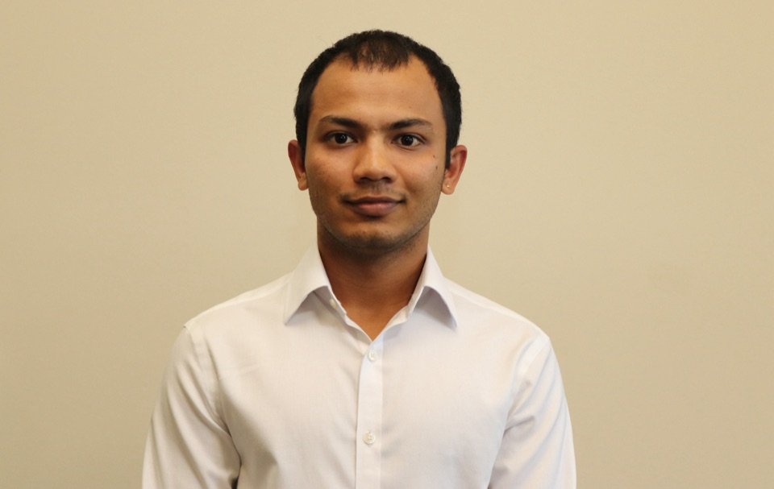
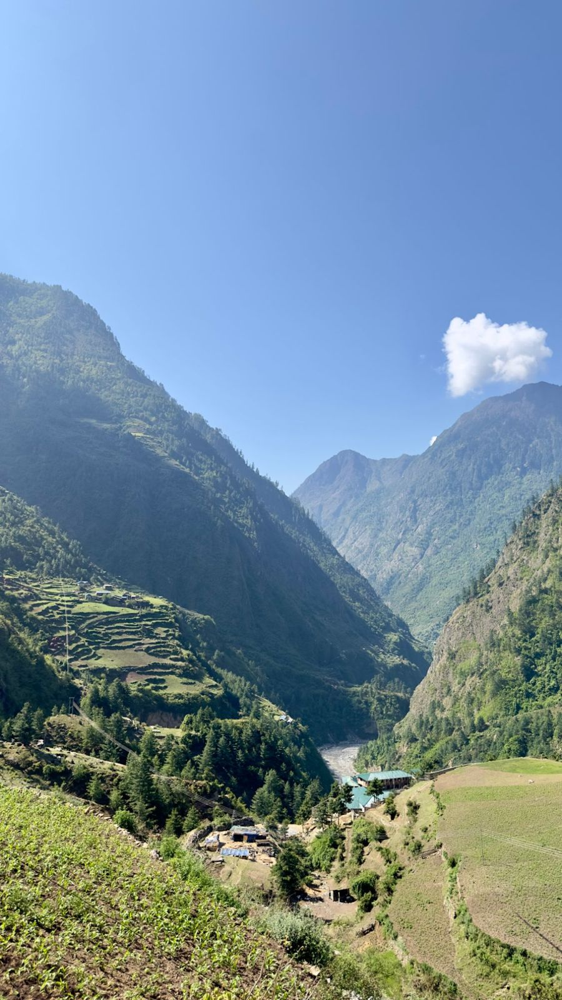
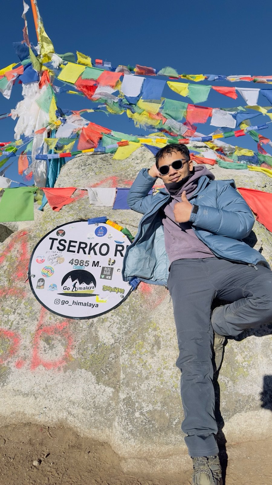
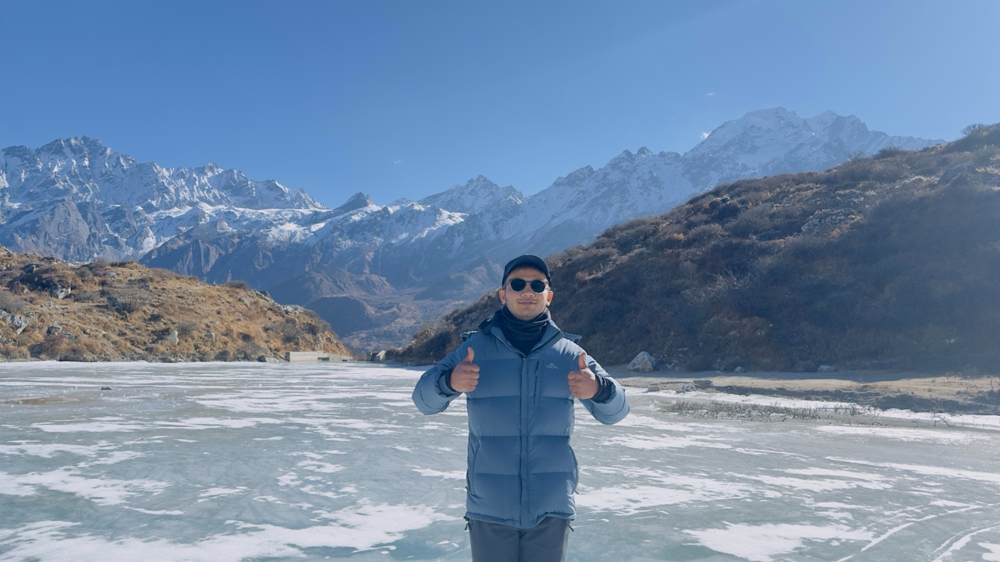

About
Math and economics,
applied to markets.
I'm an MS Finance candidate in the Applied Security Analysis Program at the Wisconsin School of Business, graduating May 2027, and Risk Manager and Analyst at Badger Fund. My research spans both sides of the capital structure — a CoreWeave term loan for the Oaktree Case Competition, HP's 2032 notes, and equity initiations on NuScale Power and Ulta Beauty.
I grew up in Nepal, where I started investing in IPOs in 2020 and came to UW–Madison on a King-Morgridge full-ride scholarship. Passed CFA Level I.
Fall 2026
What I'm working on now
Co-managing risk for a $5.6M long/short SMID-cap fund against a 6-point compliance framework built on Barra's 13 risk indices.
Equity initiation in progress — full report to follow on the Research page.
Inter-LS 210: L&S Career Development, UW–Madison.
Background
Education & credentials
Wisconsin School of Business · 2026–27. Students manage $20M+ in live equity and fixed income portfolios.
GPA 3.67 · Economics 3.89. King-Morgridge Scholarship (full ride) · Dean's List ×3 · Study abroad, LSE.
Ethics, equity, fixed income, derivatives, portfolio management, quantitative methods.
Toolkit
Skills & tools
- Three-statement credit models
- Liquidity & maturity schedules
- OAS / Z-spread relative value
- Bloomberg horizon analysis
- Collateral & recovery analysis
- Loan structure & covenants
- DCF & reverse DCF
- Sum-of-the-parts (SOTP)
- Probability-weighted scenarios
- Comparable company analysis
- Stage-gate probability framework
- Barra factor risk
- Tracking error & exposure limits
- Gross / net exposure
- Long/short construction
- Bloomberg · FactSet
- Excel financial modeling
- Python · R · Stata
- Placer.ai
- Econometrics & regression
Outside the markets
Trekking the Himalayas
I grew up in Nepal and still come back to the mountains whenever I can — most recently to the Manaslu region, and before that through Langtang and Helambu. All photos are my own.



Open to Opportunities
Seeking full-time credit and equity research roles starting 2027.
Buy-side and sell-side analyst roles. Always happy to talk markets.